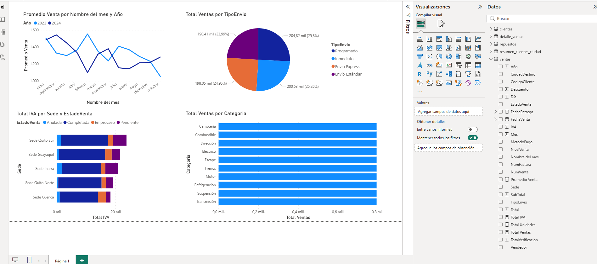
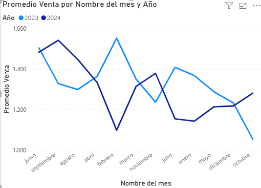
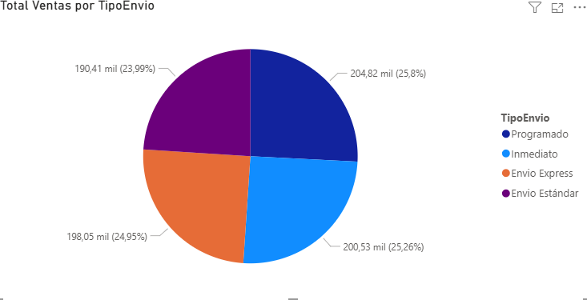
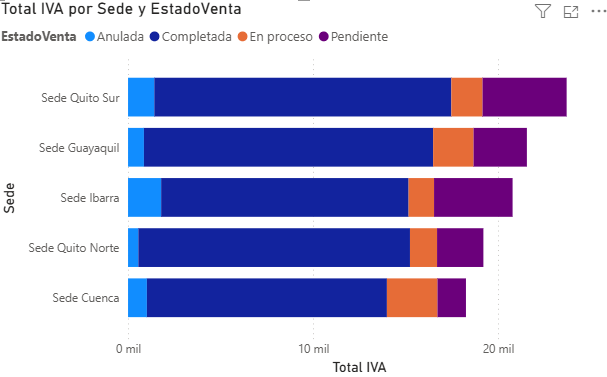
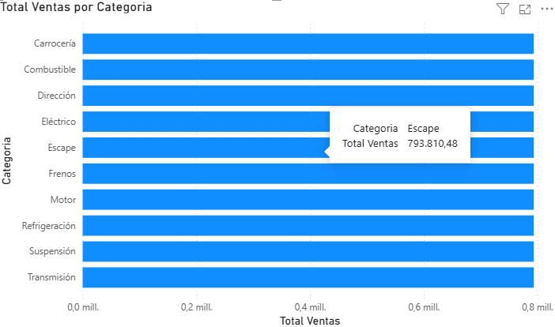

// Proyecto de análisis de datos
Dashboard interactivo desarrollado en Power BI para analizar ventas, stock, clientes e inventario de una comercial de repuestos de automóviles. Aplicando conceptos de modelado, Power Query y DAX.
// 01 — Caso práctico
Una comercial de repuestos de automóviles requiere analizar el rendimiento de su inventario, ventas y base de clientes a nivel nacional. La empresa opera desde 5 sedes (Quito Norte, Quito Sur, Guayaquil, Cuenca e Ibarra) y distribuye más de 500 referencias de repuestos a talleres mecánicos, concesionarias y distribuidores.
El proyecto importa y transforma cuatro tablas de datos en Power Query, construye un modelo relacional y genera medidas DAX para visualizar indicadores clave de negocio en un dashboard interactivo.
Los datos cubren ventas de 2023 y 2024, permitiendo análisis temporal, comparación entre sedes, comportamiento por categoría de repuesto y seguimiento del crédito de clientes.
// 02 — Indicadores clave (DAX)
// 03 — Resultado visual

// 04 — Gráficos del dashboard

Muestra la evolución mensual del promedio de venta separado por año (2023 y 2024). Permite identificar estacionalidad y comparar el rendimiento entre períodos. Los picos indican meses de mayor actividad comercial.

Distribuye el total de ventas según el tipo de envío: Programado, Inmediato, Envío Express y Envío Estándar. Los cuatro tipos tienen participaciones similares (~25% cada uno), lo que indica una demanda equilibrada.

Compara el IVA generado por cada sede desglosado por estado de venta (Completada, Anulada, En proceso, Pendiente). Sede Quito Sur lidera en IVA total, con predominio de ventas completadas.

Presenta el volumen de ventas por categoría de repuesto: Motor, Frenos, Suspensión, Eléctrico, etc. Permite identificar qué líneas de producto generan mayor ingreso y priorizar el reabastecimiento de inventario.
// 05 — Análisis de resultados
Las categorías de Motor y Frenos concentran el mayor volumen de ventas, lo que refleja la alta rotación de repuestos de mantenimiento preventivo. El stock mínimo debe monitorearse especialmente en estas líneas.
Sede Quito Sur y Guayaquil generan el mayor IVA acumulado, indicando mayor actividad comercial. Sede Cuenca presenta el menor volumen, lo que sugiere oportunidades de crecimiento en esa región.
El promedio de venta de 2023 supera al de 2024 en varios meses, aunque 2024 muestra mayor estabilidad. Los meses de enero y abril registran los promedios más altos en ambos años.
// 06 — Conclusión
El desarrollo de este dashboard permitió aplicar de manera integral las herramientas de Power BI: importación desde Excel, transformación con Power Query, modelado relacional entre cuatro tablas y creación de medidas con DAX.
El resultado es un panel interactivo que permite a la comercial tomar decisiones basadas en datos: identificar las categorías de repuestos más rentables, monitorear el desempeño por sede, analizar el comportamiento de clientes y controlar el flujo de ventas en el tiempo.
Este proyecto demostró que el análisis de datos con Power BI es una herramienta poderosa para transformar datos crudos en información estratégica, aplicable directamente en entornos empresariales reales.